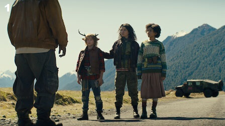
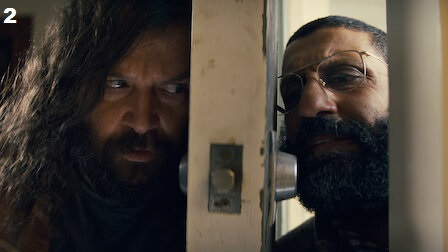
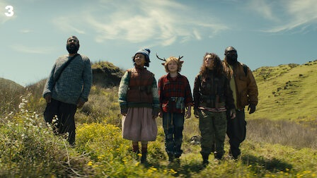
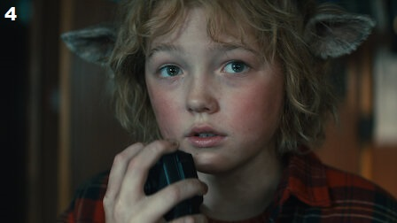
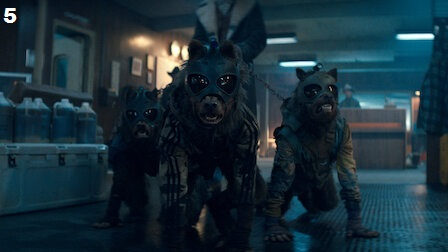
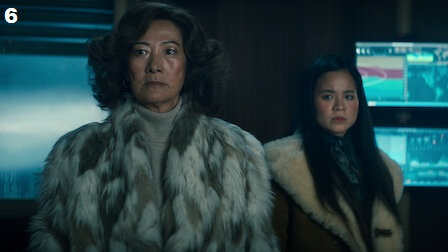
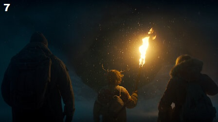
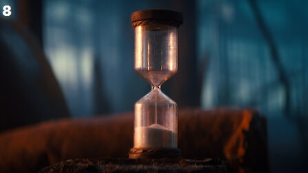

|  |
O começo também é o fim |
40-50 minutos |
Gus e o grupo vão ao Alasca para reencontrar Birdie, que trabalha em uma cura para o Flagelo. Mas, primeiro, eles tentam a sorte em um antigo cassino. |
|  |
Garoto do interior |
40-50 minutos |
Um médico se une ao grupo de Gus. Buscando uma forma de chegar à costa, eles encontram o avião de uma família que precisa de cuidados médicos. |
|  |
A matilha |
40-50 minutos |
Gus descobre mais sobre os planos de uma pessoa perigosa. O grupo corre para pegar um barco. Jepperd e Becky precisam tomar uma decisão impossível. |
|  |
Navio fantasma |
40-50 minutos |
Uma descoberta perturbadora força Gus a assumir uma tarefa macabra, e as tensões aumentam no grupo. Em terra firme, uma inimiga interroga Becky. |
|  |
Coração delator |
40-50 minutos |
A noite polar se aproxima. Gus e o grupo chegam ao posto avançado, mas não são os únicos. Para encontrar Birdie e a caverna, eles precisam encarar vários obstáculos. |
|  |
Tem monstros aqui |
40-50 minutos |
Gus conhece uma pessoa que sabe muito sobre a história dos híbridos. Em meio a reencontros emocionantes e revelações sombrias, todos os caminhos levam à caverna. |
|  |
O fim da estrada |
40-50 minutos |
Em busca de uma cura definitiva, Gus embarca em uma jornada pela caverna ao lado de duas pessoas queridas. O caos corre solto no posto avançado. |
|  |
Esta é uma história |
40-50 minutos |
Depois de sofrer uma perda inimaginável, Gus precisa tomar uma decisão que vai definir o destino de humanos e híbridos. Quem vai ficar para contar a história? |